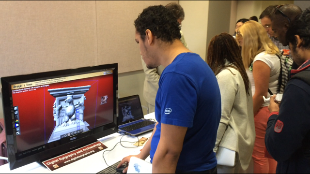
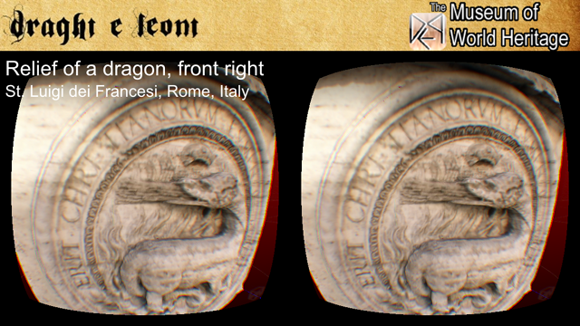

GAINESVILLE, Fla.
December 2, 2015.
"I am holding a sculpture! I cannot believe how real it feels! It's right there, in front of my iPad!" a UF sophomore said while wearing 3D glasses and holding an iPad.
The Digital Epigraphy and Archaeology group at the University of Florida organized a special virtual reality exhibition for the inauguration of the 12th President of the University of Florida. The grand opening of the exhibition and its presentation to the general public took place during the Open House event of the UF College of Liberal Arts and Sciences in honor of President W. Kent Fuchs on Wednesday, December 2 at the Pugh building at the main campus of the University of Florida. Hundreds of visitors experienced this unique exhibition either in person or on-line at the website of the DEA Virtual Museum of World Heritage1.

This virtual exhibition introduced the new natural user interface of the DEA Virtual Museum, which allows the users to interact with the 3D artifacts, using natural motions and gestures. The DEA Virtual Museum of World Heritage made its debut in 2013 in London and has been expanding its public 3D collections since then. The new interface is open-source and provides integration of several popular forms of natural user interaction, such as touch screens (in hand-held devices or laptops), VR displays (Oculus Rift head-mounted display, Samsung Gear VR and Google cardboard), accelerometer (in tablets and smartphones) in addition to the traditional touch pad, mouse and keyboard interaction.

Furthermore, the virtual interface is easy to disseminate as it can be linked in social media and embedded using an HTML tag. This particular virtual exhibition features 3D digitized models of lions and dragons that span a period of several centuries. Below you can find an example of an embedded 3D exhibit from the special collection of Dragons and Lions. Use your touch screen or mouse to interact with the exhibit. You can rotate, zoom, relight, and view in full screen information about this exhibit.
A list of supported natural user interfaces and the corresponding controls are presented in the following table:
| Interface | Gesture | Action |
| Touch Screen | 2-finger drag/pinch | Zooms in/out |
| Touch Screen | 2-finger drag/rotate | Rotates on the 2D plane |
| Touch Screen | 2-finger drag/move | Moves on the 2D plane |
| Touch Screen | 1-finger drag | Relights, rotates, moves, or zooms in/out |
| Touch Screen | 1-finger tap | Selects an object/point/option |
| Accelerometer | Pan device | Rotates viewing angle horizontally |
| Accelerometer | Tilt device | Rotates viewing angle vertically |
| Touch Pad | Scroll down/up | Zooms in/out |
| Mouse/TouchPad | Drag | Equivalent to 1-finger drag |
| Mouse/TouchPad | Click | Equivalent to 1-finger tap |
| Mouse wheel | Scroll down/up | Zooms in/out |
A list of supported 3D projection renderings is presented in the following table:
| Interface | Projection |
| Oculus head-mounted display | Fish-eye projection |
| Samsung Gear head-mounted display | Fish-eye projection |
| Google cardboard display | Fish-eye projection |
| Red-Cyan glasses | Color polarization rendering |
| 3D TV | Side-by-side full aspect ratio rendering |
| Parallel eyes viewing | Side-by-side half aspect ratio rendering |
| Crossed eyes viewing | Side-by-side half aspect ratio rendering |
The interaction design details of this project will be presented in detail in the lecture "Augmenting the workspace of epigraphists: An interaction design study" by Prof. Angelos Barmpoutis (University of Florida) at the 2nd International Conference on Information Technologies for Epigraphy and Digital Cultural Heritage in the Ancient World to be held in Rome, Italy on January 27-29, 20162. All 3D models of this special virtual reality exhibition can be found at the following link: www.digitalepigraphy.org/museum/collection/draghi-e-leoni/
To learn more about how to use our open-access tools to digitize, analyze, and disseminate your own collection feel free to contact us or visit the web-site of the Digital Epigraphy and Archaeology project.
The DEA editorial team
References:
1. The Virtual Museum of World Heritage, www.digitalepigraphy.org/museum.
2. A. Barmpoutis and E. Bozia, "Augmenting the workspace of epigraphists: An interaction design study", In the Proceedings of the 2nd International Conference on Information Technologies for Epigraphy and Digital Cultural Heritage in the Ancient World, January 27-29, 2016,
Rome, Italy.
Funded in part by the University of Florida College of the Arts and the Center for Greek Studies.
{kind=link}
{kind=link}